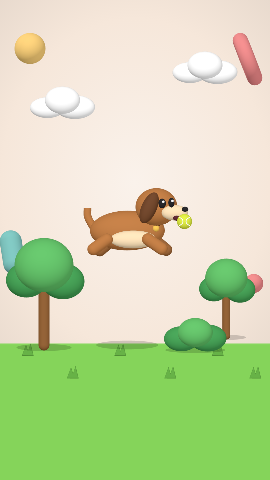
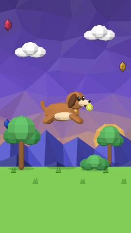
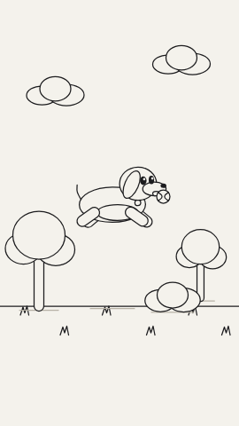
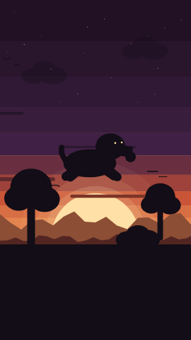
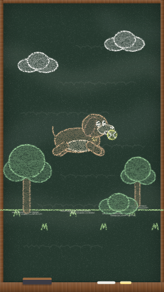
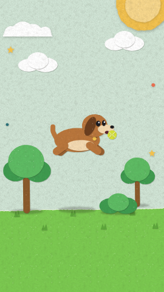
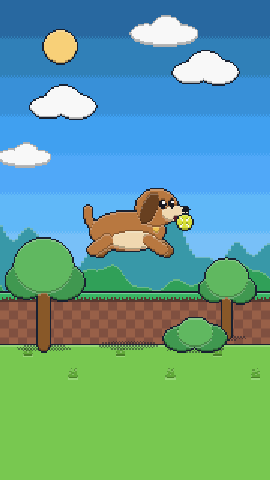
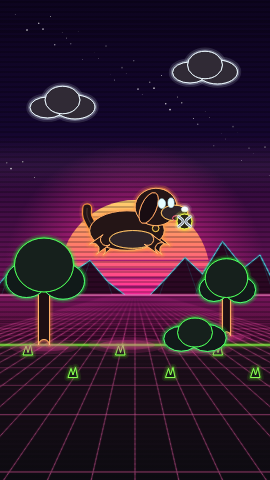
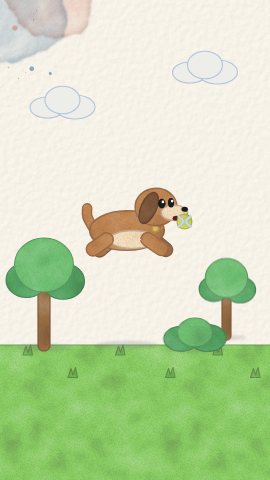
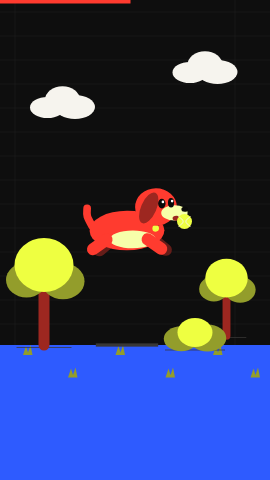

01 Soft 3D
Rounded toy-like 3D shapes with soft light, like clay figures.
Good for: kids, cute animals, products
Everything a page can be made of, numbered the way page.yaml uses it: 12 styles · 10 script types · 15 hooks · 8 voices · 6 caption styles · 8 music moods · 6 endings · 4 durations. Every style shows the same dog, the same jump, the same catch.

Rounded toy-like 3D shapes with soft light, like clay figures.
Good for: kids, cute animals, products

Faceted low-polygon 3D with flat shading and a retro game feel.
Good for: gaming, nostalgia, tech

Bold flat shapes, thick outlines and bright colours.
Good for: facts, animals, explainers

Clean single-weight lines on a plain background, drawn as you watch.
Good for: explainers, productivity, minimal brands

Black silhouettes against a coloured sky, high contrast and moody.
Good for: history, stories, mystery

Chalk drawings and handwriting on a dark board.
Good for: education, maths, how it works

Layered paper shapes with soft shadows, like a stop-motion collage.
Good for: stories, kids, crafts

Halftone dots, ink outlines and panels from old comic books.
Good for: history, myths, bold claims

Chunky pixels and limited palettes from 16-bit consoles.
Good for: gaming, tech, nostalgia

Glowing neon lines on a dark grid under an 80s sunset.
Good for: tech, space, music

Soft washes of paint with visible paper texture.
Good for: nature, emotional stories, travel

The words are the visuals: big type that moves with the voice.
Good for: quotes, motivation, lists
Something is built step by step, from nothing to finished.
Good for: engineering, history, food
A ranked list that counts down to number one.
Good for: lists, comparisons, trivia
A popular belief is stated, then confirmed or busted.
Good for: science, health, history
A hypothetical scenario followed to its consequences.
Good for: science, space, history
A real event told as a compact story with a beginning, middle and end.
Good for: history, true stories, business
A simple question whose real answer is unexpected.
Good for: facts, science, animals
An everyday thing explained from the inside.
Good for: tech, science, engineering
Two things compared point by point, with a verdict.
Good for: animals, tech, sport
A quick chain of related facts, each stranger than the last.
Good for: facts, animals, trivia
A short fictional story with a twist, often starring the mascot.
Good for: fiction, mascot, humour
Open with a question the viewer can't answer but wants to.
Why do cats purr when they're hurt?
Animals
Good for: facts, science
Open with a number so big or so small it sounds wrong.
Twenty quadrillion ants are alive right now.
Nature
Good for: facts, space, money
Tell the viewer that something they do every day is wrong.
You've been cutting avocados wrong your whole life.
Food
Good for: life hacks, health, food
Open on a picture that looks like it can't be real.
This lake is pink, and nobody added anything to it.
Nature
Good for: nature, space, engineering
Start a sentence and finish it only at the end.
The real reason cats knock things off tables is...
Animals
Good for: stories, loops
Open with a strong statement, then prove it.
Napoleon wasn't short.
History
Good for: history, myths, opinions
Promise that the last item is the best one.
Five animals that cheat death, and number one is immortal.
Animals
Good for: lists, countdowns
Put the viewer inside the situation: "POV: you are...".
POV: you built the pyramids and got paid in beer.
History
Good for: stories, history, humour
Frame the topic as overlooked or hidden.
Nobody talks about why every Apple ad shows nine forty-one.
Business
Good for: facts, history, business
Flash the finished result first, then go back to the start.
This started as a pile of sand.
Engineering
Good for: build it, transformations
Share what people in the field know and others don't.
The pilot and co-pilot never eat the same meal.
Jobs
Good for: jobs, business, how it works
Dare the viewer to guess, spot or try something.
You have three seconds to spot the odd one out.
Puzzles
Good for: quizzes, puzzles, trivia
Open on the most dramatic moment, then rewind.
The ship is sinking, and the band keeps playing.
History
Good for: stories, history
Name a small frustration everyone has felt.
Your phone dies at twenty percent. Here's why.
Tech
Good for: life hacks, humour, tech
Disagree with something everyone believes.
Eight glasses of water a day? You don't need them.
Health
Good for: myths, opinions, science
Slow, low and clear, like a nature documentary.
Good for: nature, history, science
Fast and upbeat, with weight on every key word.
Good for: lists, facts, sport
Warm, with pauses that build suspense.
Good for: stories, history
Quiet and close, for mysteries and calm content.
Good for: mystery, relaxing
Flat and dry, so the humour lands on the pause.
Good for: humour, absurd facts
Like a friend explaining something over coffee.
Good for: how it works, life hacks
Crisp and authoritative, like breaking news.
Good for: tech, business, current events
No voice: captions and music carry the video.
Good for: quotes, kinetic typography, silent viewing
Each word lights up as it is spoken.
Good for: any voiced video
Short phrases in large type at the centre of the screen.
Good for: facts, punchy edits
Letters appear one at a time, as if being typed.
Good for: mystery, tech, history
Small, quiet subtitles near the bottom.
Good for: busy visuals, calm content
Outlined words that pop in with a bounce.
Good for: kids, humour, cartoons
Full lines with the key word in a highlight colour.
Good for: explainers, education
Slow tension that builds under the voice.
Good for: mystery, cliffhangers
Big drums and strings for dramatic moments.
Good for: history, space, sport
Relaxed beats for calm, cosy content.
Good for: study, how it works, relaxing
Bright and bouncy, keeps the pace high.
Good for: lists, life hacks
Light and silly, for cartoons and animals.
Good for: animals, kids, humour
Soft piano and strings for moving stories.
Good for: stories, nature
Strange, sparse sounds for unexplained things.
Good for: mystery, space, deep sea
No music: voice only, or a trending sound added when posting.
Good for: trending sounds, voice-led videos
The last line flows back into the first, so the video replays.
Good for: short facts, 15-second videos
Stop just before the answer.
Good for: series, stories
Ask the viewer a question to answer in the comments.
Good for: opinions, comparisons
Promise a continuation in the next video.
Good for: series, long stories
End on a short, funny or surprising line.
Good for: facts, humour, animals
Answer or echo the opening line.
Good for: questions, stories
One fact, one punch. Best for loops.
Good for: loops, single facts
The default: a hook, three beats and an ending.
Good for: most videos
Room for a short story or a top 5.
Good for: countdowns, short stories
Full stories, countdowns and comparisons.
Good for: stories, comparisons